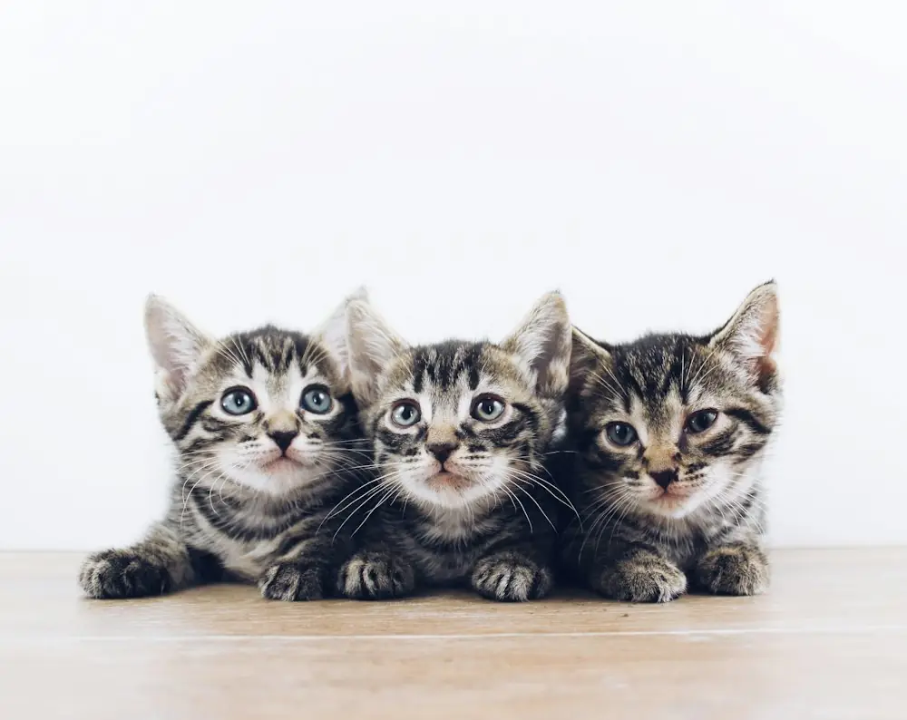
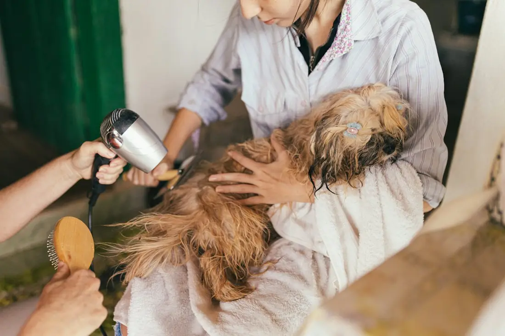

4,7 Google puanı, 236 değerlendirme
İlk aşısından yaşlılığına, bir ömür aynı veteriner.
Kedi ve köpeğinizi yavruyken tanır, her yaşın ihtiyacına göre takip ederiz.
Her yaşa göre hizmetler
Bir yavrunun ihtiyacı ile 12 yaşındaki bir kedinin ihtiyacı aynı değil. Hayvanınızın yaşını seçin.

Örnek görselİlk muayene ve aşı takvimi
Genel kontrol, karma ve kuduz aşıları. Takvimi birlikte çıkarırız.
Parazit koruması
İç ve dış parazit uygulamaları, yaşa ve kiloya uygun dozda.
Kısırlaştırma
Doğru zamanı birlikte belirler, ameliyat sonrası takibi yaparız.
Yıllık check-up
Muayene, aşı tekrarları ve gerekirse kan tahlili.
Diş bakımı
Diş taşı temizliği ve ağız sağlığı kontrolü.
Hastalık ve tahlil
İştahsızlık, kusma, deri ve kulak sorunlarında teşhis ve tedavi.
Kan ve böbrek tahlilleri
Yaşla gelen sorunları erken yakalamak için düzenli tahlil.
Eklem ve ağrı takibi
Hareket kısıtlılığı ve ağrı için tedavi ve ev düzeni önerileri.
Daha sık kontrol
Yılda iki kontrol ile kilo, kalp ve diş sağlığını izleriz.
“Klinik ile tanıştığımdan beri başka bir veterinere ayak bile basmadım.”
Google'daki bir değerlendirmeden

Örnek görselHakkımızda
Vita, Bosna Bulvarı'nda kedi ve köpekler için hizmet veren bir veteriner kliniği. Vita, Latincede hayat demek. Amacımız hayvanınızın her yaşını sağlıklı geçirmesi.
Hayvanınızın geçmişini bilir, aşı ve kontrol zamanlarını sizin yerinize takip ederiz.
Neden Vita?
-
Tam kayıt
Aşılar, tahliller, ilaçlar. Hayvanınızın geçmişi tek dosyada.
-
Biz hatırlatırız
Aşı ve kontrol zamanı gelince size mesaj atarız.
-
Sadık hasta sahipleri
236 değerlendirme, 4,7 Google puanı.
-
Her gün 20:00'ye kadar
Hafta sonu dahil, işten sonra da gelebilirsiniz.
Yavrumu ilk kez ne zaman getirmeliyim?
Eve geldiği ilk hafta içinde. Genel kontrol yapar, aşı ve parazit takvimini birlikte planlarız.
Yaşlı hayvanım ne sıklıkla kontrole gelmeli?
7 yaşından sonra yılda iki kez öneriyoruz. Erken fark edilen sorunların tedavisi daha kolay.
Randevusuz gelebilir miyim?
Gelebilirsiniz. Randevu alırsanız beklemeden muayene oluruz.
Ücretleri önceden öğrenebilir miyim?
Evet. Muayene başında yapılacak işlemleri ve tahmini maliyeti paylaşırız.
Aşı kartını kaybettim, ne yapmalıyım?
Bize daha önce geldiyseniz kayıtlarımızda var. Yeni bir kart çıkarırız.
Randevu alın
Formu doldurun, sizi arayıp saati birlikte belirleyelim. Acil bir durumda formu beklemeden arayın.